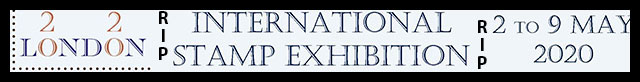
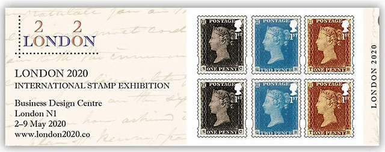
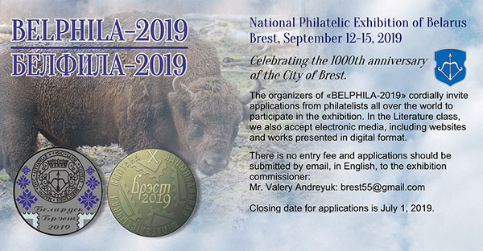
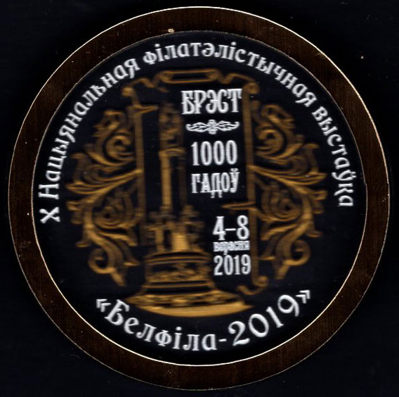
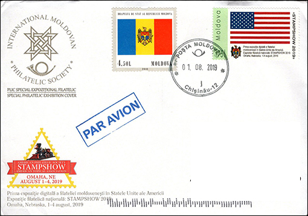
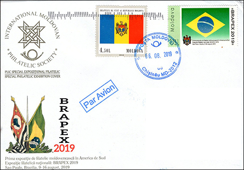

Website Competitions — Historical Articles
Select a historical report or competition document:
- Website Competitions — 2021
- Chicagopex — 2019
- APS Stamp Show — 2019
- BELPHILA — 2019 in Belarus
- Estonia — 2020
- PWO-EXPO 2022 — Invitation
- PWO-EXPO 2022 — Report
- PWO-EXPO 2022 — Exhibits Gallery (Virtuafil)
- Rossica 2014 — Website Competition
- Italia 2018 — Website Competition
- EFIRO 2008 — Press Release
- Can the FIP Judge the Philatelic Websites?
- The Sad End of the FIP Websites Evaluation Program
- IPHLA — PWO Participation
- Pakistan Philately — Awarded Member
Additional historical documents
Historical discussion of website competitions and the separate PWO logo contest:
Websites Competitions 2020
Click here for pages related to 2021 websites competitions.

Introduction
Entry Forms deadline for literature exhibits submissions was 31 December 2019.
The membership of one of the FIP affiliated national organizations was required. Potential participants were obliged to contact their National Commissioners.
In my capacity of honorary member of an USA stamp club, the organizers accepted my participation with a website. The total amount paid by me for participation was of US$ 58.00, this being the highest fee I ever paid for a participation in a websites contest in 20 years. Please compare it with the participation in Belphila - 2019 ($ 0.00 fees) or in Chicagopex 2019 ($25.00). The London 2020 fee included some administration dues, related to the old and obsolete idea of participating only through National Commissioners...
London 2020. NEWS.
1. The Evaluation of Digital Literature at London 2020 (Excerpts)
"The current FIP regulations for judging literature do not cover digital entries. This situation was recognised when the IREX for London 2020 was produced where Paragraph 22.2 of the IREX stated that the ‘current best practice’ would be used.
Over the summer of 2019 a group of experienced literature jurors, under the leadership of the late Gary Brown (Chairman of the FIP Literature Commission), proposed a detailed scorecard for digital literature.
After a series of constructive reviews, a refined version was considered by the FIP Board at their meeting on 24 November 2019. I am delighted to report that the Board agreed that the scorecards should be used on an experimental basis at London 2020.
Frank Walton RDP FRPSLChairman, London 2020 Organising Committee
8 December 2019Scoring Categories and Considerations
C. Websites
a. Treatment (Max 40). Usability; functionality; data content; navigation; pagination; page structure; appropriate use of free v restricted pages; searchability.
b. Originality (Max 40). Creativity; breadth of scope covered.
c. Technical (Max 15). Platform (e.g. PC, Mac, iPad, phone); compatibility with current and old versions of operating systems.
d. Presentation (Max 5).Visual appearance; adherence to disability guidelines re use of colour".
Is the current "best practice" really a good practice?
- a. and b. above: very broad notions, that leave a too large room to subjectivity of judges. I wonder if this is reasonable because they have very little practical experience in what concerns judging websites competitions.
- c. Technical. compatibility with current and old versions of operating systems (...)". Do judges expect compatibility with DOS, Windows 1, Classic Macintosh OS, etc., etc.? How about at least mentioning explicitly these requirements?
- d. "Visual appearence". This requirement is another back door for the subjectivity. There is not such a thing as universally agreed "disability guides", especially for private hobby websites. For USA only eventually take a look at this source. Excerpt: "The good news is that private entities have a good amount of flexibility when it comes to web accessibility." Conclusion: d. is mostly an irrelevant requirement.
How about considering and rewarding what can be done and it was done for a long time on some websites, like: a) specialized, eventually interactive databases, b) philatelic clubs and organizations, c) presentations of specific websites at international exhibitions (like the one at EFIRO 2008), d) multilingual websites, etc., etc.? Such a pity that "best practice" won't be practically tested for at least the next two years (see below why) and then all can start from the beginning, as usually.
Notice from the US Commissioner (as of March 18, 2020)
Dear Exhibitors,
I have just received information that London2020 will be "postponed" to a future date. That date has not been specified at this point, but should be announced shortly. The General Chairman will be posting the information on the London2020 website in the form of a Newsletter, perhaps as early as today, but not later than the end of this week.
No information relating to refunds or other details is yet available, but should be provided with the Newsletter.London 2020 Newsletter No. 16: (as of 18 March 2020)
"(...) Although we have not fully defined all the details, the exhibition will go ahead at the same venue on the earliest feasible dates available: 19 to 26 February 2022. I'm sorry that I have not been in a position to communicate this message any earlier, but I hope you will understand the scale of the problems that we are trying to resolve. Frank Walton RDP FRPSL Chairman, London 2020 Organising Committee." Source.
Not a word about, citing the US Commisioner, "refunds or other details."
London 2020 Newsletter No. 17b: 7 April 2020 (excerpts)
The competitive classes at London 2020 have been split into two parts: Literature and all others.
(In what concerns the Literature exhibition - vm) 1.4. The new plan is that the jury will convene in London immediately before Stampex exhibition at the Business Design Centre (BDC) to assess the literature entries. That exhibition is scheduled to be open from 30 September to 3 October 2020.
London 2020 Newsletter No. 19
The London 2020 Newsletter No. 19 (link): "It was hoped that the London 2020 FIP Literature Class would happen between 30 September to 3 October 2020, running alongside the UK National Exhibition (Stampex) at the BDC. Sadly, the organisers of that event have had to cancel the show due to the pandemic. All the books are in London waiting to be judged, and the FIP have agreed that the original jury team would carry on with just this class. The Organising Committee remains committed to carrying on with the Literature Class, but we have decided to wait until the situation is much clearer before making any firm plans."
Because of so many uncertainties I withdrew from the competition and I asked to be reimbursed. My request was accepted by the organizers. Good bye London 2020. The potentially recovered fees went already sent to Estonia 2020 competition (retrospectively, a very bad idea).
Final Update of August - September 2020
Excerpts from PWO's (VM) email conversations with Jack Harwood (JH), US Commissioner London 2020 and Frank Walton (FW), Chairman London 2020.
VM. I maintain again that this website's competition could take place without any problems when it was announced, because no one and nothing had to move or to be moved. Please inform the organizers about this obvious opinion. ( ) Under special circumstances (read: Covid pandemics) the jury can make his work online too, like it happens for example with worldwide online teaching, etc. But the convenient idea of one fits all (if books, then websites too) is the easiest one, isn't it? The London 2020 unfortunate websites' competition experience shows that choosing the beaten paths is the easiest way! I still wonder why they didn't want to let at least a part of the competition (websites) run as foreseen. A kind of collective punishment for Covid??
JH. The response (from OC vm) was that they included web sites with books in one Literature competition, and they did not want to separate books from web sites. I don't know whether this makes sense or not.
VM. I maintain again that this website's competition could take place without any problems when it was announced, because no one and nothing had to move or to be moved. Please inform the organizers about this obvious opinion. ( ) Under special circumstances (read: Covid pandemics) the jury can make his work online too, like it happens for example with worldwide online teaching, etc. But the convenient idea of one fits all (if books, then websites too) is the easiest one, isn't it? The London 2020 unfortunate websites' competition experience shows that choosing the beaten paths is the easiest way! I still wonder why they didn't want to let at least a part of the competition (websites) run as foreseen. A kind of collective punishment for Covid??
FW. The biggest problem that we're facing in this area is the fact that the FIP do not (currently at least) recognise virtual competitions. You are correct that it would be possible to judge just the www exhibits, but to do so for just 30 or so out of the many hundreds of exhibits just isn't worthwhile from an organiser's perspective.
PWO conclusions
Many thanks to both London 2020 officials that they were ready to discuss the problems with us, the philatelic press, even if our positions are diametrically opposite.
Because there were enrolled about 30 participants, it would have been common sense for organizers (and for those who decide their rules, the FIP) to adapt to the existing sanitary situation and to give satisfaction to at least those many website competition participants, who waited for a long time for their London 2020 participation. There were no real obstacles for their participation, all of them having their exhibits online anyway. It is a too long wait till the London 2022...
Royal Mail "contribution"
As a kind of compensation - consolation, the Royal Mail issued a 6 x 1st Class Stamp Book, valued £4.56, commemorating an exhibition that it knew it was cancelled. No mention about the cancellation can be found on this peculiar philatelic document...

Pro Memoria - Websites Competitions 2019
BELPHILA - 2019 in Belarus
1000 Anniversary of the City of Brest

Acknowledgments for the advertising graphics: Niall Murphy, PWO member.
A few word about this exhibition and its websites contest. This event was obviously sponsored by the state of Belarus and probably by Russian Federation, both being linked to an anniversary related to their countries.This can explain why nothing related to this philatelic event can be found anymore on the web. It explains also why the organizers searched for ideas about how to value and reward philatelic sites shortly before the exhibition started. The awards reflect how the participated sites were judged by other, previous websites competitions, and not some (unknown) evaluation of the competition judges, whose previous qualification for the job is totally in the dark.
The competitors remain with a beautiful commemorative medal and a book dedicated to the issues of 2017 postage stamps in Belarus and with the satisfaction that they could participate in a contest without costs. The logistics of the organizers was remarcable, because they managed to send in time to the competitors beautiful souvenirs reminding their competition.

Chicagopex 2019
- November 22 - 24, 2019
- Websites participation accepted
- Entry fee: $25
- PayPal option from abroad
- No requirement for any membership
- No requirement for previous exhibition points
- Closing date for applications was September 14, 2019 . Source 1, Source 2.
August 21, 2019. I sent by email and by post my application on June 26, 2019, with all documents that were required (a check paying the fee being included), and I asked two times for a confirmation of reception by email. None came so far. A bad sign? Maybe after Sept. 14...
Oct. 22, 2019. Strange, strange, I heard nothing from the organizers, despite the fact that the event is approaching.
Nov. 25, 2019. Surprise, surprise! I received an email from the Literature Exhibition Chairman Ken Trettin, with the attached Palmaries for the Chicagopex Literature exhibition. I learned from this email that "During the next several days I will be packaging your ribbons, medals and Literature Evaluation sheets" and from its attachment that this PWO site www.pwmo.org was awarded Large Vermeil. Awarded PWO members: Niall Murphy (moldovastamps.org) - Large Gold, and Michael Kogan (www.pleophilatelie.eu) - Large Vermeil. Congratulations! A full review is available here.
You are invited to admire below two FDCs, dedicated to the participation of the PWO member Niall Murphy at two philatelic exhibitions, in USA and in Brazil, with its site International Moldovan Philatelic Society & Catalogue of the Postal Stamps of the Republic of Moldova.

The stamps on the right are personalized Moldova stamps. The site was awarded in both exhibitions. Congratulations, Niall!

| Created:
May 15, 2019. Revised:
September 24, 2020. Copyright © 2019 - 2020 by PWO and by Victor Manta, Switzerland / USA All rights reserved worldwide. |
|